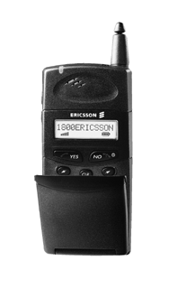

Head for Home with WBZ NewsRadio 1030 and AT&T and win an Ericsson 788 Digital Multi-Network Wireless Phone! Listen to WBZ NewsRadio September 13th through October 15th for your chance to win!
Get in touch when you win an Ericsson 788 Digital Multi-Network Wireless Phone and sign up with AT&T Personal Network! With AT&T Personal Network, you'll pay one rate - with no long distance or roaming charges for incoming and out going calls made throughout most of Maine to Virginia. Also, with AT&T Personal Network, you'll get 10 cents a minute on your home long distance, calling card and personal 800 number calls... and it's all on one bill.
So Head for Home today with AT&T Personal Network and a new Ericsson 788 Digital Multi-Network Wireless Phone!
For Next Day Delivery or the nearest AT&T Authorized Dealer (below), call 1-800-Imagine
|
3 Center Plaza Boston, MA 02108 Ph: 617-720-3560 Fax: 617-720-0371 Manager: Stacey Mueller Store Hours: M-F 8:00 a.m. - 6:00 p.m. Saturday 10:00 a.m. - 5:00 p.m. Sun- CLOSED |
16 Hillside Road Cranston, RI 02920 Ph: 401-942-1079 Fax: 401-942-3392 Manager: Tricia Mastrostefano Store Hours: M-S 10:00 a.m. - 9:00 p.m. Sunday noon-5:00 p.m. |
|
1210 Newport Avenue S. Attleboro, MA 02703 Ph: 508-761-6300 Fax: 508-761-8069 Manager: Dianna Ham Store Hours: M-S 9:00 a.m. - 9:00 p.m. Sunday noon - 6:00 p.m. |
88 Needham Street Newton, MA 02158 Ph: 617-527-9100 Fax: 617-527-8007 Manager: Sharon Noel Store Hours: M-F 9:00 a.m. - 7:00 p.m. Sat. 10:00 a.m. - 6:00 p.m. Sun. 12 p.m. - 5:00 p.m. |
|
85 Andover Street Danvers, MA 01923 Ph: 978-777-4114 Fax: 978-777-1730 Manager: Ed Bourque Store Hours: M-F 10:00 a.m. - 7:00 p.m. Sat. 10:00 a.m. - 6:00 p.m. Sun. 12 p.m. -5:00 p.m. |
1329 Beacon Street Brookline, MA 02446 Ph: 617-566-6800 Fax: 617-566-0322 Manager: Steven Belfiore Store Hours: M-F 8:00 a.m. - 7:00 p.m. Sat. 10:00 a.m. - 5:00 p.m. Sun. 12 p.m. - 5:00 p.m. |
|
68 A Burlington Mall Road (across from Cabot Home Furniture) Burlington, MA 01803 Ph: 781-505-1900 Manager: Bob Foster Store Hours: M-F 10:00 a.m. - 9:00 p.m. Sat. 10:00 a.m. - 7:00 p.m. Sun. 12 p.m. - 5 p.m. |
|
© 1999 AT&T Personal Network Calling Plan: Effective 9/1/99, pay phone calls are subject to a surcharge of up to 30 cents per call to recover fees incurred by carriers to compensate pay phone owners for use of their equipment. Additional $14.95 monthly fee applies for Internet; telephone access and other charges and taxes may apply. Other terms and conditions apply. 10 cent rate applies to qualifying AT&T Calling Card calls, AT&T personal 800 calls and direct-dialed long distance calls from home within the U.S.; 10 cent international rate applies for AT&T Calling Card calls and direct-dialed calls from home when placed to Canada, the United Kingdom and the border cities of Mexico. Conditions apply to qualify for one bill and for AT&T Personal Network. Wireless service requires credit approval, activation fee, an annual contract, a Digital multi-network phone and subscription to AT&T Wireless Services long distance for your wireless calls. End user's principal residence must be within an eligible AT&T wireless digital network. Roaming charge is 69 cents a minute outside your home area. These wireless rates are not available for credit card and international calls. Wireless airtime measured in full minutes and rounded up to the next full minute. Included minutes cannot be carried over to any other month. You must remain an AT&T residential long distance customer with a combined bill for AT&T residential and wireless services to remain on AT&T Personal Network's wireless plans. Full terms and conditions are in the AT&T Wireless Services Welcome Guide or Calling Plan Brochures. Offer may not be combined with any other promotional offers.